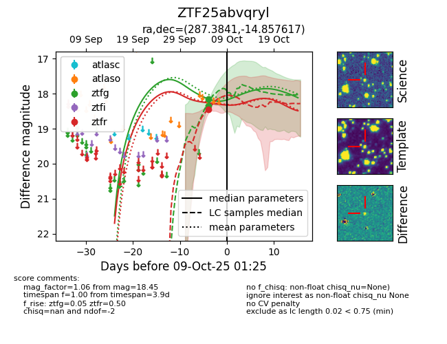
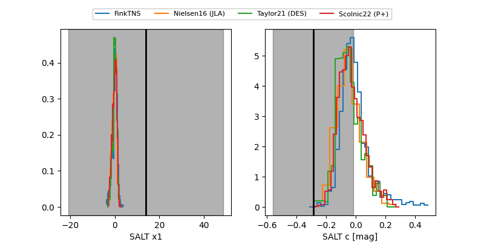

FINK: ZTF25abvqryl
Lasair: ZTF25abvqryl
ALeRCE: ZTF25abvqryl
ZTF25abvqryl (ztf,fink)
equatorial (ra, dec) = (287.3841,-14.85762)
galactic (l, b) = (21.5803,-10.64857)


last ztfg=18.36, ztfr=18.45
2 ztfg, 1 ztfr detections